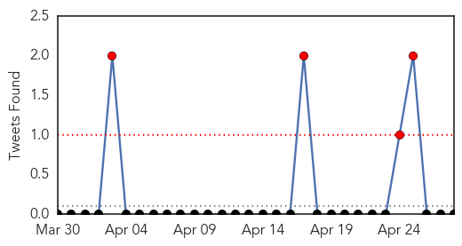
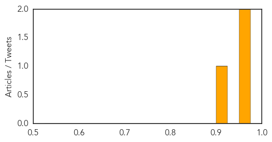

Influenza
30-Day Web Trend
3 alerts, 5 warnings

30-Day Twitter Trend
4 alerts, 0 warnings

Article Locations

Article Confidences
Top Articles:
- 0.966
- bioCSL supports public health efforts in Laos with donation of more than 700,000 doses of seasonal influenza vaccine
- 0.966
- bioCSL supports public health efforts in Laos with donation of more than 700,000 doses of seasonal influenza vaccine
- 0.902
- Mutant bird flu virus worries Bangladeshi scientists
Top Tweets:
-
No tweets found for Apr 28, 2014
Cholera
30-Day Web Trend
0 alerts, 0 warnings

30-Day Twitter Trend
0 alerts, 0 warnings

Article Locations

Article Confidences

Top Articles:
-
No articles found for Apr 28, 2014
Top Tweets:
-
No tweets found for Apr 28, 2014